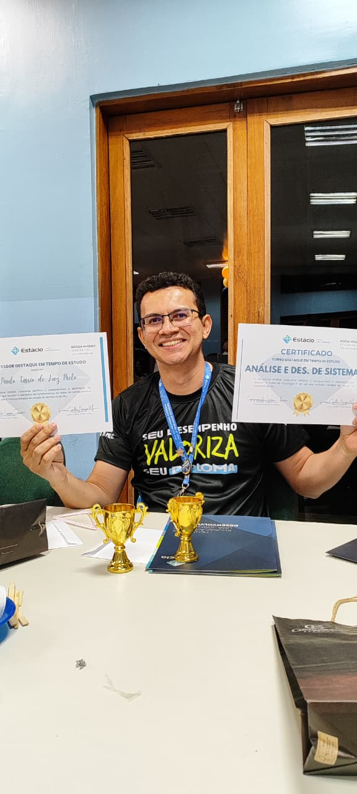
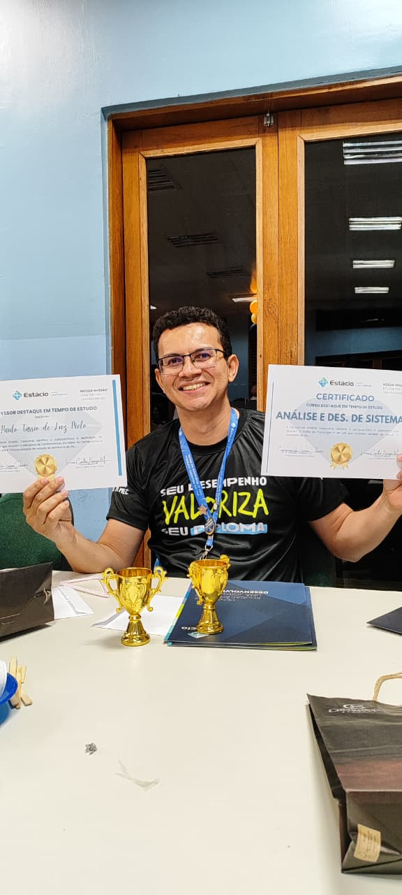
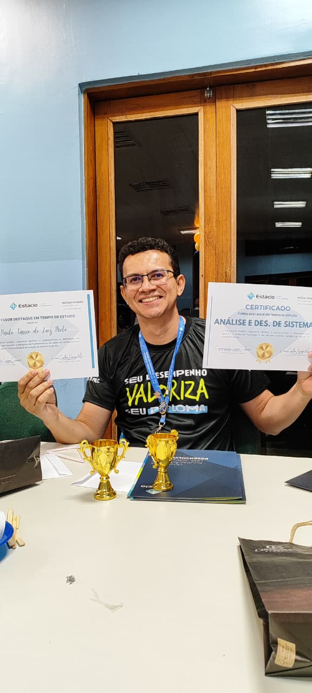

Bem-vindo ao site pessoal do Prof. Msc. Paulo Tássio, entusiasta e pesquisador nas áreas de tecnologia, programação mobile e inteligência computacional. Aqui você encontrará informações sobre seus projetos, cursos e pesquisas.



Atualmente é coordenador e professor na Faculdade Estácio de Castanhal, professor na Faculdade FACI Wyden em Belém, foi professor substituto na Universidade Federal do Pará em 2022 e 2023, cursando Pós-Graduação em Ciência de Dados e Big Data Analytics. Mestre em Engenharia Elétrica, com ênfase em Computação Aplicada, pelo Programa de Pós-Graduação em Engenharia Elétrica (PPGEE) da Universidade Federal do Pará. Possui graduação em Engenharia de Computação pela Faculdade Estácio campus IESAM, experiência na área de programação mobile e microcontroladores, participou do Grupo de Robótica Aplicada do IESAM em 2015 e 2016 como membro e vice-coordenador, foi bolsista do CNPq (perÃodo: Agosto de 2014 à Julho de 2015) como o projeto BlueVison, baseado em aplicativo para o sistema operacional Android, que visa auxiliar a locomoção de deficientes visuais em vias publicas.
Email: paulo.melo@estacio.br
LinkedIn: PauloTassio
Lattes: CurrÃculo Lattes
GitHub: PauloTassio